×
ENTRADA REGISTRADA
... todavía no acabé...
respuesta háptica simulada · señal inestable
ESCUCHA / IPHONE 4 / 8804

ENTRADA REGISTRADA
... todavía no acabé...
respuesta háptica simulada · señal inestable
ESCUCHA / IPHONE 4 / 8804